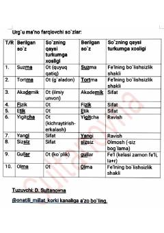

UMUrg'u orqali ma'nosi o'zgaradigan o'zbekcha so'zlar tahlili.
Ushbu qo'llanma o'zbek tilidagi urg'u orqali ma'nosi o'zgaradigan so'zlarni tahlil qiladi. Unda so'z turkumlarining urg'u ta'sirida o'zgarishi va ularning nutqdagi o'rni misollar bilan tushuntirilgan.